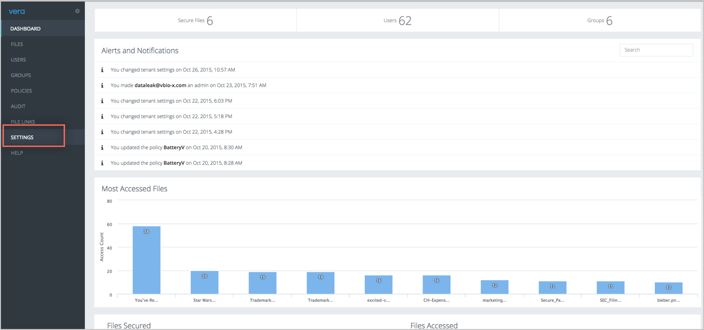
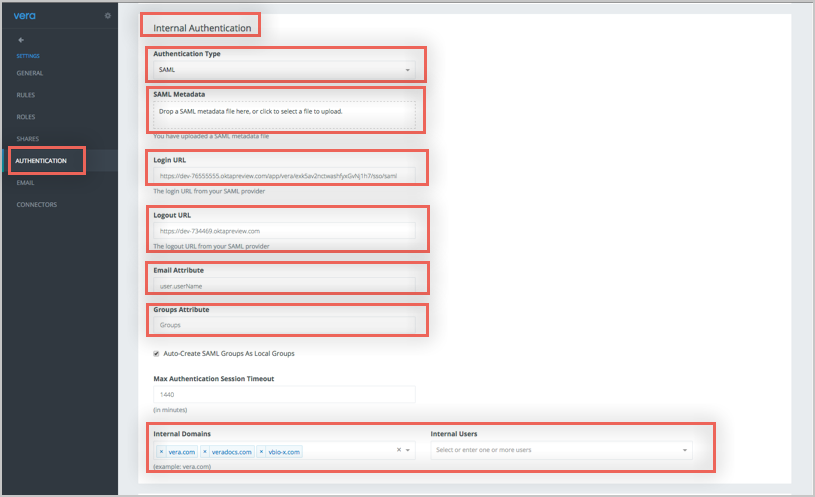
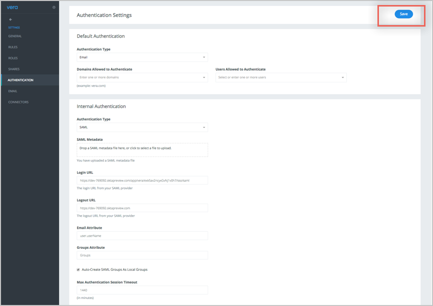
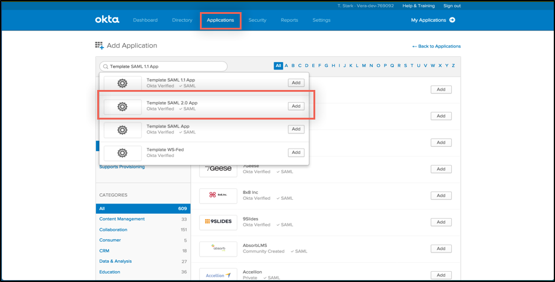
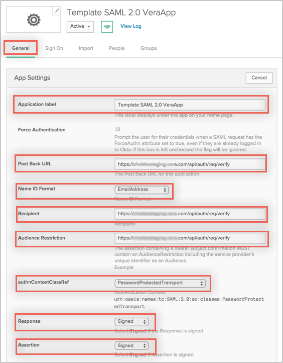

On the Settings page, navigate to the Authentication tab, then scroll down to the Internal Authentication section.
Sign into the Okta Admin Dashboard to generate this variable.
Sign into the Okta Admin Dashboard to generate this variable.
Email attribute: Enter user.userName (enter as is).
Groups attribute: Leave the default values.
For example, if the username is johndoe@mycompany.com, enter mycompany.com in this field. Or, you can also manually enter the usernames of all the users who will be using SAML under the Users section.


From the Okta Application Network dashboard, navigate to the Admin tab. (Note: you must be the Okta admin to configure Vera.)
Select the Applications tab and search for Template SAML 2.0 App .

Select the General tab for the new Template App, then click Edit.
Enter the following values into the corresponding fields (see screen shots inline for reference):
Application label: The name that will appear under the app on the Vera home page.
Post Back URL: https://<yourSubDomain>.vera.com/api/req/verify.
For example: https://acme.vera.com/api/req/verify where acme is the sub domain name.
Name ID Format: Select Email Address from the Name ID dropdown menu.
Recipient: https://<yourSubDomain>.veradocs.com/api/auth/req/verify.
Audience Restriction: https://<yourSubDomain>.vera.com/api/auth/req/verify.
authnContextClassRef: PasswordProtectedTransport.
Response: Signed.
Assertion: Signed.

Request: Uncompressed.
Destination: https://<yourSubDomain>.vera.com/api/auth/req/verify.
Default Relay State: Leave this field empty.
Attribute Statements: Leave this field empty.
Group Name: Enter the name for this attribute that will be included in the SAML response attribute statement (this essentially turns the option on). You’ll then need to enter in the groups (using expressions) in the group filter field to specify which groups will be included with this attribute.
Group filter: (Optional). Specify which groups you want included with the attributed you named in the Group Name field by entering expressions that will be used to filter groups. For example app1.* means all groups prefixed with that string will be included in the SAML Response attribute statement.
Application Visibility: Leave unchecked.
Select Save.
Assign the application to a user, then click Done.
Done!
Notes:
SP-initiated flows and Just in Time (JIT) provisioning are supported.
IDP-initiated flows are not supported.